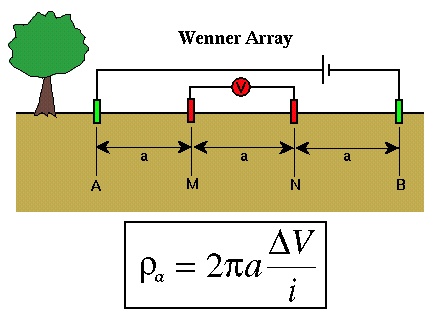
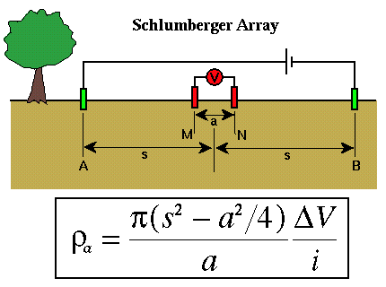

Resistivity Soundings
When doing resistivity sounding surveys, one of two survey types is most commonly used. For both of these survey types, electrodes are distributed along a line, centered about a midpoint that is considered the location of the sounding. The simplest in terms of the geometry of electrode placement is referred to as a Wenner survey. The most time effective in terms of field work is referred to as a Schlumberger survey.
For a Wenner survey, the two current electrodes (green) and the two potential electrodes (red) are placed in line with each other, equidistant from one another, and centered on some location as shown below.

The apparent resistivity computed from measurements of voltage, ΔV, and current, i, is given by the relatively simple equation shown above. This equation is nothing more than the apparent resistivity expression shown previously with the electrode distances fixed to a. To generate a plot of apparent resistivity versus electrode spacing, from which we could interpret the resistivity variation with depth, we would have to compute apparent resistivity for a variety of electrode spacings, a. That is, after making a measurement we would have to move all four electrodes to new positions.
For a Schlumberger survey, the two current electrodes (green) and the two potential electrodes (red) are still placed in line with one another and centered on some location, but the potential and current electrodes are not placed equidistant from one another.

The current electrodes are at equal distances from the center of the sounding, s. The potential electrodes are also at equal distances from the center of the sounding, but this distance, a/2, is much less than the distance s. Most of the interpretational software available assumes that the potential electrode spacing is negligible compared to the current electrode spacing. In practice, this is usually interpreted to mean that a must be less than 2s/5.
In principle, this implies that we could set a to be less than 2s/5 for the smallest value of s that we will use in the survey and never move the potential electrodes again. In practice, however, as the current electrodes are moved outward, the potential difference between the two potential electrodes gets smaller. Eventually, this difference becomes smaller than our voltmeter is capable of reading, and we will need to increase a to increase the potential difference we are attempting to measure.
Resistivity
- Current Flow and Ohm's Law pg 4
- The Fund. Electrical Property is Resistivity, NOT Resistance pg 5
- Resistivities for Common Earth Materialspg 6
- Current Density and Electric Fieldpg 7
- A First Estimate of Resistivitypg 8
- Current Flow From Two Closely Spaced Electrodespg 9
- A Practical Way of Measuring Resistivity pg 10
- Sources of Noise pg 11
- Depth of Current Penetration V.S. Current ElectrodeSpacing pg 12
- Current Flow in Layered Media pg 13
- Variation in Apparent Resistivity: Layered Versus Homogeneous Media pg 14
- Current Flow in Layered Media Versus Electrode Spacing pg 15
- A Second Example of Current Flow in Layered Mediapg 16